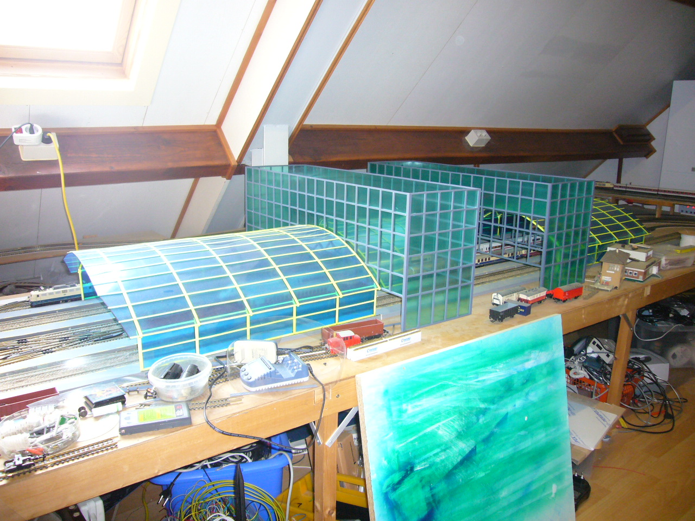

This project is still under construction.
I wanted to have a nice modern looking station. I needed a glass roof to cross my 7 tracks. I have been thinking about stealing the design of Frankfurth flughafen station or Lehrter Bahnhof. In the end I decided for Lehrter Bahnhof. Ofcause I can not make it one to one since that station is way to big (twice the size I can fit). So I started drawing in google sketchup again to come to a nice design. This is a impression after using openscad
When I started calculating how much material I would need I quickly found out that making it from brass would be too expensive. So I decided to make it from plastic (styreen). I bought a sheet (1mm) of platic and started cutting 5mm strips. I made myself a cutting aid:
After you glue 4 strips together in a circle form you get a nice formed plastic that remains in its form. Here I am gluing one strip:
In order to build the 'glass' structure I made a mold so it can work on it while it is not on the track.
Here are some photos where the first 2 parts are placed on the track:
It took some time and thinking on how to do this. But here is the first layer with
window glass included. In the end I was able to buy some decent plastic sheet. Now I was
able to have I sheet for the whole width of the station. Including some adaptor plastic on
the side I was able to glue this in nicely. I airbrushed that transparent plastic with
transparant ink to get the right color.
Here an image when I am finished with the glas. The end also worked out quite well due to
the small stips I made with the printer.
Now that this is finished I start with building the first building. First the outside must be printed and glued together. I glue it with Bison super glue.
Here are a couple stips that are readily printed
And here is the first framework that can stand on it own. It is more stable then I anticipated so that is nice.
After many hours of prining and glue parts together here is the not yet finished outside but it is nearing completion.
For cutting the plastic for the windows I needed to cut 85cmx4.7cm parts. This turned out to be quite difficult to
stay within 1mm over a lengt of about a 1m. After many hours of experimenting I came up with the following:
I screwed a aluminum bar on a piece of wood. First I move the plastic in position then I lock the aluminum with the 2 screws to make sure that the plastic can't move one way or the other. Pressing it down only by hand (always ended up with 1 or 2 mm play room) is not enough I needed the 2 screws. Here some intermediate results:

Here is the first example of new roof.
After doing the first one I got in trouble since I could not get the transparent plastic anymore. But I found sheets of 0.4 and 0.2 mm thick and that adds up to 2x0.3mm so I decided to do that. Getting the glass in is getting better. I can just slide both layers in without mucg fuss.
And here the final result
Such a nice shot I think this just looks great.
Almost to big to fit on the camera.